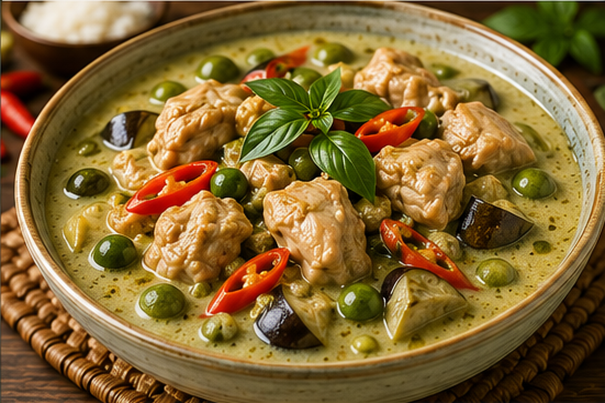
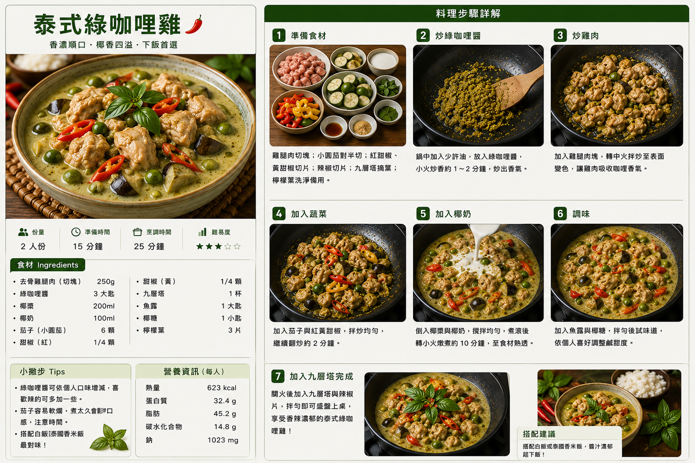

泰式綠咖哩雞
椰香濃郁、微辣開胃的泰式經典，雞腿肉吸附綠咖哩與椰奶香氣，搭配茄子、甜椒與豌豆，最後以九層塔提香。
食譜指南
點擊可放大檢視 🔍
料理步驟
共 7 步01
雞腿肉切一口大小；茄子切段、甜椒切段；九層塔洗淨瀝乾，檸檬葉撕小片備用。
02
炒鍋加入沙拉油，中小火放入綠咖哩醬，炒約1～2分鐘至香氣明顯，避免炒焦。
03
加入雞腿肉，轉中火翻炒至表面變色，讓雞肉均勻裹上咖哩醬。
04
放入茄子、甜椒與豌豆拌炒約2分鐘，使蔬菜均勻沾附咖哩醬。
05
倒入椰奶與檸檬葉，攪拌均勻；煮滾後轉小火續煮約10分鐘，直到雞肉熟透、蔬菜變軟。
06
加入魚露與砂糖調味，試味後依個人口味調整鹹度與甜度。
07
關火後加入九層塔快速拌勻，利用餘溫釋放香氣，盛盤後即可搭配白飯或泰國香米享用。